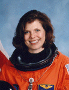

Lyndon B. Johnson Space Center
Houston, Texas 77058
|
National Aeronautics and Space Administration Lyndon B. Johnson Space Center Houston, Texas 77058 |
 |
Biographical Data |
||
MARY ELLEN WEBER, PH.D.
NASA ASTRONAUT (FORMER)
PERSONAL DATA: Dr. Weber was born in 1962 in Cleveland, Ohio; Bedford Heights, Ohio is her hometown. She is married to Dr. Jerome Elkind, who is originally from Bayonne, New Jersey. She is an avid skydiver and golfer, and also enjoys scuba diving. Her mother, Joan Weber, currently resides in Mentor, Ohio; her father, Andrew Weber, Jr., is deceased.
EDUCATION: Graduated from Bedford High School in 1980; received a Bachelor of Science degree in chemical engineering (with honors) from Purdue University in 1984; received a Ph.D. in physical chemistry from the University of California at Berkeley in 1988; and received a Masters of Business Administration from Southern Methodist University in 2002.
EXPERIENCE: During her undergraduate studies at Purdue, Dr. Weber was an engineering intern at Ohio Edison, Delco Electronics, and 3M. Following this, in her doctoral research at Berkeley, she explored the physics of gas-phase chemical reactions involving silicon. She then joined Texas instruments to research new processes for making computer chips. TI assigned her to a consortium of semiconductor companies, SEMATECH, and subsequently to Applied Materials, to create a revolutionary reactor for manufacturing next-generation chips. She has received one patent and published eight papers in scientific journals.
Dr. Weber has logged over 3,500 skydives since 1983. She is an nine-time silver/bronze medallist at the U.S. National Skydiving Championships, and she participated in the world record largest completed freefall formation in 2002, with 300 people. In addition, she is an instrument-rated pilot, with over 800 hours flying time, including 600 in jet aircraft.
Dr. Weber was selected by NASA in the fourteenth group of astronauts in 1992. During her 10-year career with NASA, she held myriad positions. She worked extensively in technology commercialization, and as part of a team reporting to NASA’s chief executive, she worked directly with a venture capital firm to successfully identify and develop a business venture leveraging a space technology. In addition, Dr. Weber was the Legislative Affairs liaison at NASA Headquarters in Washington D.C., interfacing with Congress and traveling with NASA’s chief executive. Prior to this appointment, she was Chairman of the procurement board for the Biotechnology Program contractor, and she also served on a team that revamped the $2 billion plan for Space Station research facilities. Dr. Weber’s principal technical assignments within the Astronaut Office included participating in critical launch, landing, and test operations at the Kennedy Space Center, testing Shuttle flight software, and developing with international space agencies the training protocols and facilities for experiments aboard the Space Station. A veteran of two space flights, STS-70 and STS-101, she has logged over 450 hours in space. She resigned from NASA in December 2002.
Dr. Weber is currently Vice President at the University of Texas Southwestern Medical Center in Dallas, Texas. She is also an active speaker on topics of performance, risk, and success, and a speaking consultant and coach.
SPACE FLIGHT EXPERIENCE: STS-101 Atlantis (May 19-29, 2000), the third Shuttle mission devoted to International Space Station construction. The crew repaired and installed a myriad of electrical and life-support components, both inside and out, and boosted the Station to a safe orbit. Dr. Weber’s two primary responsibilities were flying the 60-foot robotic arm to maneuver a spacewalk crewmember along the Station surface, and directing the transfer of over three thousand pounds of equipment. The STS-101 mission was accomplished in 155 orbits of the Earth, after traveling 4.1 million miles in 236 hours and 9 minutes.
STS-70 Discovery (July 13-22, 1995), a mission which successfully delivered to orbit a critical NASA communications satellite, TDRS-G. Dr. Weber’s primary responsibility was checking the systems of the satellite and sending it into its 22-thousand-mile orbit above the equator. She also performed biotechnology experiments, growing colon cancer tissues never before possible. She was the primary contingency spacewalk crewmember, and the medical officer. The STS-70 mission was completed in 142 orbits of the Earth, after traveling 3.7 million miles in 214 hours and 20 minutes.
OCTOBER 2004
This is the only version available from NASA. Updates must be sought direct from the above named individual.